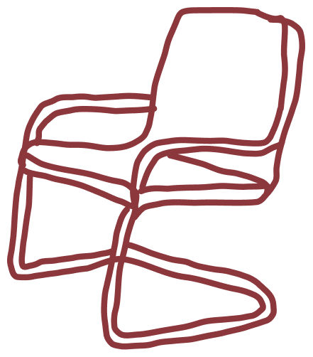

Studio Lixivel · Les guides du studio
10 astuces pour gagner de la place sans sacrifier le confort ni le style.
Des conseils concrets pour repenser vos espaces, choisir le bon mobilier et créer un intérieur adapté à votre façon de vivre. De quoi passer des idées à un projet concret.
Avant de commencer
Moins d’encombrement, plus de fluidité et une place pour chaque chose.
Optimiser son intérieur, ce n’est pas forcément pousser les murs ou entreprendre de gros travaux. C’est surtout comprendre comment vous vivez dans vos espaces pour faire des choix adaptés.
01
Qu’est-ce qui me gêne au quotidien ?
02
Quels usages sont vraiment prioritaires ?
03
Qu’est-ce que je souhaite conserver ?
Dans les pages suivantes, vous trouverez dix pistes concrètes à adapter à la surface, aux contraintes techniques et au budget de votre projet. Certaines idées ne nécessitent aucuns travaux ; d’autres demandent une étude plus approfondie.
Le conseil du studio. Commencez par prendre des mesures fiables et par identifier les éléments qui ne peuvent pas être déplacés facilement : fenêtres, portes, radiateurs, arrivées d’eau et prises.
Les 10 astuces · 01 à 04
Des idées simples à mettre en pratique, à votre rythme.
01
Avant de déplacer les meubles, identifiez les usages essentiels : dormir, travailler, recevoir, cuisiner ou ranger. Une pièce devient plus agréable lorsque chaque activité trouve naturellement sa place.
À essayer : notez les trois fonctions prioritaires de la pièce. Supprimez les meubles qui gênent ces usages.
Pensez à votre quotidien plutôt qu’à une photo idéale.
02
Même dans une petite surface, il faut pouvoir se déplacer facilement. Vérifiez l’ouverture des portes, l’accès aux fenêtres et le passage autour des meubles avant de valider un agencement.
À essayer : tracez sur votre plan les trajets que vous empruntez le plus souvent ; repérez ce qui les encombre.
Un meuble peut être beau et pourtant mal placé.
03
Étagères hautes, bibliothèques ou rangements au-dessus d’un meuble libèrent de la place au sol. Gardez les objets utilisés tous les jours à portée de main et réservez les hauteurs aux affaires occasionnelles.
À essayer : repérez un mur encore sous-utilisé et vérifiez ce qu’il pourrait accueillir.
Toute fixation doit être adaptée à la nature du mur.
04
Un rangement efficace répond à un besoin précis : chaussures à l’entrée, linge dans la salle d’eau, papiers près du bureau. Le sur-mesure peut être pertinent pour les niches ou les configurations atypiques, mais n’est pas toujours indispensable.
À essayer : listez ce qui reste souvent à l’extérieur des placards ; cherchez une place logique pour chaque catégorie.
Mieux vaut un rangement utile qu’un placard de plus.
Les 10 astuces · 05 à 08
Des choix de mobilier, de lumière et de couleurs qui agrandissent sans encombrer.
05
Un canapé trop profond ou une table trop large peut déséquilibrer une pièce. Avant d’acheter, vérifiez les dimensions réelles, le dégagement nécessaire et l’emplacement des autres meubles.
À essayer : matérialisez au sol le gabarit d’un futur meuble avec du ruban de masquage.
Les dimensions comptent autant que le style.
06
Banquette avec coffre, lit avec tiroirs, bureau discret ou table extensible : le mobilier multifonction peut répondre à plusieurs besoins, sans multiplier les objets. Choisissez-le selon votre usage réel et sa facilité de manipulation.
À essayer : sélectionnez un seul meuble qui pourrait remplir deux fonctions.
Multifonction ne signifie pas forcément convertible.
07
Une pièce lumineuse paraît souvent plus ouverte. Évitez de bloquer les fenêtres avec de gros meubles et combinez plusieurs sources d’éclairage : général, fonctionnel et d’ambiance.
À essayer : observez où la lumière manque le matin et le soir, puis adaptez vos points lumineux.
L’éclairage transforme l’usage et la perception d’une pièce.
08
Des couleurs et des matériaux qui dialoguent entre eux apportent de l’harmonie. Il n’est pas nécessaire de tout peindre en blanc : une palette simple, des contrastes maîtrisés et des matières adaptées suffisent souvent.
À essayer : choisissez une teinte dominante, une teinte complémentaire et une matière fil conducteur.
L’objectif n’est pas d’agrandir à tout prix, mais d’équilibrer.
Les 10 astuces · 09 et 10
Les derniers réflexes pour ne rien laisser au hasard.
09
Une alcôve, un renfoncement ou un dessous d’escalier peut devenir une bibliothèque, un petit bureau ou un rangement. Envisagez aussi le sens d’ouverture des portes lorsque celui-ci complique l’agencement.
À essayer : photographiez les espaces inutilisés et imaginez une fonction adaptée à chacun.
Toute modification technique doit être étudiée avec un professionnel.
10
Un plan coté permet d’éviter les achats inadaptés et de vérifier l’ensemble : circulations, dimensions, portes, prises et implantation. Des visuels 3D peuvent ensuite aider à se projeter dans l’ambiance et les choix décoratifs.
À essayer : rassemblez plan, mesures, photos, mobilier conservé et inspirations avant toute commande importante.
On optimise d’abord l’espace, puis on choisit ce qui le remplit.
À retenir. On optimise d’abord l’espace, puis on choisit ce qui le remplit. Un plan coté, même simple, évite la plupart des achats regrettés.

À vous de jouer
Un outil à garder sous la main pour faire le point sur votre intérieur.
Studio Lixivel vous accompagne dans l’agencement et la décoration de votre intérieur, avec des prestations à distance ou un accompagnement plus complet selon votre projet.
studiolixivel.com/contact
Nos conseils et les coulisses du studio : @studiolixivel sur Instagram et TikTok.